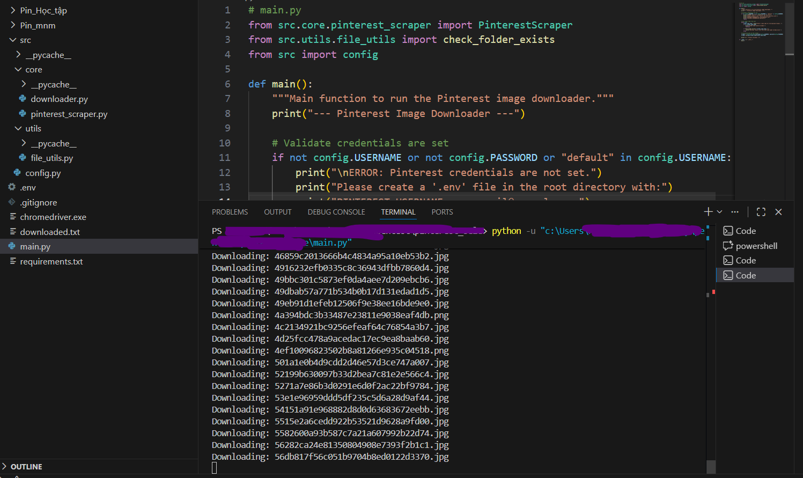
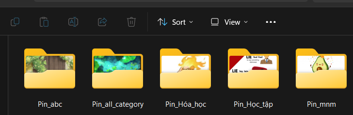

Pinterest Image Downloader - Selenium Version
Tổng quan dự án
Công cụ tự động hóa download hình ảnh từ Pinterest sử dụng Selenium WebDriver - framework browser automation phổ biến nhất. Dự án hỗ trợ đăng nhập tự động, infinite scroll để load tất cả ảnh trong board, và download hàng loạt ảnh chất lượng cao từ profile người dùng.
Video Demo:
Video demo quá trình tự động download ảnh từ Pinterest
Chrome
WebDriver
Auto
Infinite Scroll
20s
Wait Timeout
4x
Resolution
Main Entry Point (main.py)
from src.core.pinterest_scraper import PinterestScraper
from src.utils.file_utils import check_folder_exists
from src import config
def main():
"""Main function to run the Pinterest image downloader."""
print("--- Pinterest Image Downloader ---")
# Validate credentials are set
if not config.USERNAME or not config.PASSWORD or "default" in config.USERNAME:
print("\nERROR: Pinterest credentials are not set.")
print("Please create a '.env' file in the root directory with:")
print("PINTEREST_USERNAME=your_email@example.com")
print("PINTEREST_PASSWORD=your_password")
return
# Get folder name from user
while True:
folder_name_temp = input("Enter a base name for the download folders: ")
if not folder_name_temp:
print("Folder name cannot be empty.")
continue
if check_folder_exists(f"{folder_name_temp}_*"):
print("Warning: Folders with this base name might already exist.")
break
# Initialize and run the scraper
scraper = PinterestScraper(username=config.USERNAME, password=config.PASSWORD)
scraper.run(base_folder_name=folder_name_temp)
print("\n--- Process Finished ---")
if __name__ == "__main__":
main()Pinterest Scraper (pinterest_scraper.py)
from time import sleep
from bs4 import BeautifulSoup
from selenium import webdriver
from selenium.webdriver.chrome.options import Options
from selenium.webdriver.common.by import By
from selenium.webdriver.common.keys import Keys
from selenium.webdriver.support.ui import WebDriverWait
from selenium.webdriver.support import expected_conditions as EC
from src import config
from src.core.downloader import ImageDownloader
class PinterestScraper:
"""A Selenium-based scraper for downloading images from Pinterest boards."""
def __init__(self, username, password):
self.username = username
self.password = password
self.downloader = ImageDownloader()
self.driver = self._setup_driver()
def _setup_driver(self):
"""Initializes and configures the Chrome WebDriver."""
options = Options()
options.add_argument(f"user-agent={config.USER_AGENT}")
options.add_argument(f"window-size={config.WINDOW_SIZE}")
options.add_argument("--disable-notifications")
driver = webdriver.Chrome(options=options)
driver.implicitly_wait(config.IMPLICIT_WAIT_TIME)
return driver
def login(self):
"""Logs into Pinterest."""
print("Navigating to Pinterest and logging in...")
self.driver.get(config.BASE_URL)
wait = WebDriverWait(self.driver, config.EXPLICIT_WAIT_TIMEOUT)
# Click login button
login_button = wait.until(EC.element_to_be_clickable(
(By.CSS_SELECTOR, config.LOGIN_BUTTON_SELECTOR)))
login_button.click()
# Enter credentials
email_field = wait.until(EC.presence_of_element_located(
(By.ID, config.EMAIL_INPUT_ID)))
email_field.send_keys(self.username)
password_field = self.driver.find_element(By.ID, config.PASSWORD_INPUT_ID)
password_field.send_keys(self.password)
password_field.send_keys(Keys.RETURN)
# Wait for login to complete
wait.until(EC.element_to_be_clickable(
(By.CSS_SELECTOR, config.AVATAR_SELECTOR)))
print("Login successful.")Infinite Scroll & Image Extraction
def scrape_images_from_board(self, board_name):
"""Navigates to a board and scrapes all image URLs with infinite scroll."""
print(f"\n--- Starting scrape for board: {board_name} ---")
image_urls = []
# Navigate to the board
board_link = self.driver.find_element(By.XPATH, f"//h2[text()='{board_name}']")
board_link.click()
sleep(random.uniform(*config.MEDIUM_WAIT))
# Scroll down to load all images
scroll_pause_time = 2
no_change_count = 0
max_no_change = 5 # Stop after 5 consecutive scrolls with no new height
while True:
last_height = self.driver.execute_script("return document.body.scrollHeight")
# Scroll down 1000px
self.driver.execute_script("window.scrollBy(0, 1000);")
sleep(scroll_pause_time + random.uniform(0.5, 1.5))
# Collect images from current page state
soup = BeautifulSoup(self.driver.page_source, 'html.parser')
images = soup.select(config.IMAGE_SELECTOR)
for image in images:
if image.get('srcset'):
image_urls.append(image['srcset'])
new_height = self.driver.execute_script("return document.body.scrollHeight")
print(f"Scrolled: {len(set(image_urls))} unique images found.")
if new_height == last_height:
no_change_count += 1
if no_change_count >= max_no_change:
print("Reached the end of the page.")
break
else:
no_change_count = 0
return list(set(image_urls))Image Downloader (downloader.py)
import urllib.request
from src.utils.file_utils import log_urls
from src.config import DOWNLOADED_LOG, NOT_DOWNLOADED_LOG
import os
class ImageDownloader:
"""Handles downloading images and logging results."""
def download_images(self, image_urls, folder_name):
"""Downloads images from a list of URLs into a specified folder."""
downloaded_urls = []
not_downloaded_urls = []
unique_urls = sorted(list(set(image_urls)))
print(f"\nFound {len(unique_urls)} unique images to download.")
for url in unique_urls:
try:
# The last URL in srcset is the highest resolution (4x)
highest_res_url = url.split(',')[-1].replace(' 4x', '').strip()
filename = highest_res_url.split('/')[-1].split('?')[0]
print(f"Downloading: {filename}")
urllib.request.urlretrieve(
highest_res_url,
os.path.join(folder_name, filename)
)
downloaded_urls.append(highest_res_url)
except Exception as e:
print(f"Error downloading: {e}")
not_downloaded_urls.append(highest_res_url)
# Log results
log_urls(DOWNLOADED_LOG, downloaded_urls)
log_urls(NOT_DOWNLOADED_LOG, not_downloaded_urls)
print(f"Finished: {len(downloaded_urls)} succeeded, {len(not_downloaded_urls)} failed.")Configuration (config.py)
import os
from dotenv import load_dotenv
load_dotenv()
# --- Credentials ---
USERNAME = os.getenv("PINTEREST_USERNAME", "default_user@example.com")
PASSWORD = os.getenv("PINTEREST_PASSWORD", "default_password")
# --- WebDriver Settings ---
USER_AGENT = "Mozilla/5.0 (Windows NT 10.0; Win64; x64) AppleWebKit/537.36"
WINDOW_SIZE = "1200,800"
# --- Pinterest Selectors ---
BASE_URL = "https://www.pinterest.com"
LOGIN_BUTTON_SELECTOR = "div[data-test-id='simple-login-button']"
EMAIL_INPUT_ID = "email"
PASSWORD_INPUT_ID = "password"
AVATAR_SELECTOR = "div[data-test-id='gestalt-avatar-svg']"
BOARD_TITLE_SELECTOR = "div[data-test-id='board-card-title'] h2"
IMAGE_SELECTOR = "img[srcset]"
# --- Timing ---
SHORT_WAIT = (2, 4)
MEDIUM_WAIT = (3, 5)
IMPLICIT_WAIT_TIME = 10
EXPLICIT_WAIT_TIMEOUT = 20Công nghệ sử dụng:
Tính năng nổi bật:
- Selenium WebDriver: Framework automation phổ biến, dễ học và sử dụng
- Infinite Scroll: Tự động scroll để load tất cả ảnh trong board
- BeautifulSoup: Parse HTML hiệu quả để extract image URLs
- High Resolution: Tự động chọn ảnh có độ phân giải cao nhất (4x)
- Explicit/Implicit Waits: Đợi elements load đúng cách
- Download Logging: Ghi lại URLs đã download và lỗi
Kết quả thu được:

Console log quá trình download ảnh

Các thư mục chứa ảnh đã download

File log URLs đã download
Kỹ năng chính
Python Programming
Selenium, BeautifulSoup, urllib, Requests
Web Scraping
Browser automation, HTML parsing, Data extraction
Infinite Scroll
Dynamic content loading, JavaScript execution
Batch Download
URL extraction, File management, Error handling